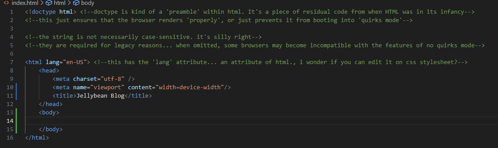
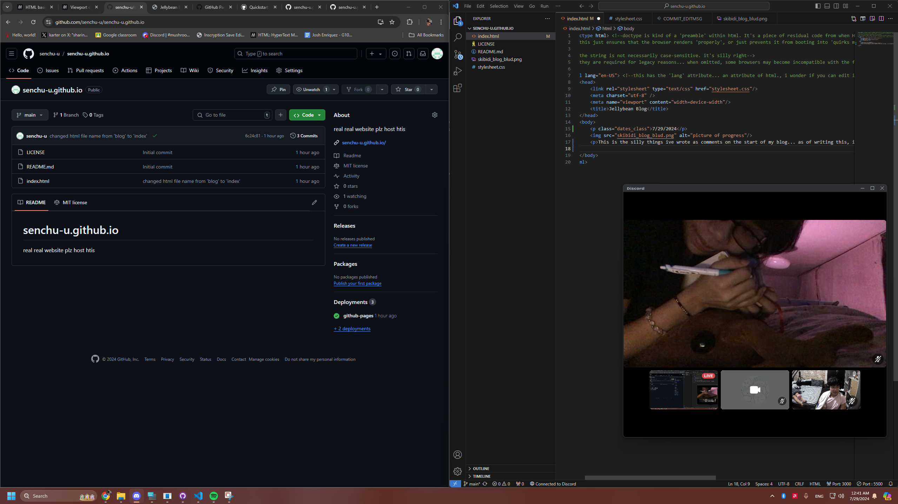

7/29/2024
This is the silly things ive wrote as comments on the start of my blog... as of writing this, it's currently 12:40AM. I am on the camera with my sweet baby girl, double mint. take a look at her plz
she has been writing on her cool journal for almost an hour which is something i can NEVER DO, which is why i'm learning how to make a website... just so i can do the same in my own passion... ehehehe shes so beautiful i love her.
her handwriting is so absolutely beautiful like i swear she was just made to write... shes literally the poet but at the same time the subject of these poems. she's just THAT girl.
i just used the bold element for that time check. omg. anyway... i wanna learn viewports this time!!
What really made me curious about developing websites are how they render in different devices. It seems like a chore having to make a separate website that works for mobile devices right? It's one of the things I want to just casually learn because it's such a lovely skill to have.
so, everything we will learn about viewport will be put here!
9/18/2024
it has been a while. 2 months, almost, since i've wrote here. a lot has happened since then. I've been really... going through so many changes, and idrk what to do of it. Whenever I try to journal out my feelings it always ends up in a big blur because I can't express myself well as much as I imagine myself in my mind. I always try to think journaling would help me express my feelings more, but I find it hard to express myself for the most part.
8:48 PM
It's really tough at UMAK. I fucking hate it here with every fiber of my being... I wish I could have some luxuries... yknow? Like... at least an aircon... I wish I didn't enroll here too. Idk... I really hate it at this school. It's tough, and I'm tired of pretending that it's okay; it's so not okay. I'm struggling to cope with the biggest changes. The people around me... I can't put myself around them so much. I DONNOOO... i just wish they were like me more.. i wish they had more money... i wish i didn't have to suffer the hot fucking heat for 5 weeks aday. i wish we had online classes.i don't want to be fucking here cooped up in the heat for A DAY.
input ur skibidi things here! (no use)
9/21/24
hi, my blogsite. it's been a few days since i've wrote again. i find it really hard to sneak in programming between everything I have to do for school. I just finished some small task for our groupwork where we have to make a jingle, but I expect more to come.
on another note, I want to document how I've learnt about 'character cases'. Usually, in HTML, it's really hard to use values such as
she (dachi) and I have been fighting more. It's gotten really murky for me. I really don't know how to express myself in regard to this—i feel really tired at some point; not just because of her but of every circumstance I'm in
Can you imagine it? Supposedly, I'm blessed. I still have food to eat and the comfort...
I feel incredibly numb to it all. i don't like how everything turned out for me. why am I in this school :( at some point, trying to write my thoughts just feel really confusing. i don't even know what i feel. i feel mindnumbingly confused.
i cope through it with food. i gained a kilogram just in a week. it helps me feel comfortable knowing at least i have access to all the yummy food in the world. maybe, maybe, it could make up for the opportunities i've lost... or... maybe i didn't have them in the first place to begin with
i thought we'd see each other more. why do you want me to do these things for you when i feel like i do a lot. i know you can't do much and it's all you can give, but why am i resentful?
i'm still angry at you, and everyone and everything around me. i'm mad at the weather for not raining hard enough; i'm mad at you for not wanting to see me enough—for not understanding my situation more at least. Why can't I expect that from you? Just because we're growing apart doesn't mean we have to become a full on LDR. Imagine living less than a kilometer away but meeting up is just impossible.
Maybe if you were in my position, you'd understand it all but you're not. You're in a better spot, and I have to catch up with you but I can't. I want to be happy for you but I can't even be happy in my circumstance. It's been a month, and I've never genuinely felt the joy I felt a year ago. I just want to die sometimes. idk what's going on with me to be angry at everything. I just wish I could disappear into the woods.
Maybe if my parents cared enough about what I want instead of fucking focusing on their trip, maybe I would be happy right now. Stop blaming me for being mad at my situation, it's your fualt for not being enough for what I want. My education is your priority and you have to fulfill it; and you can't comfort me with words so simply. You can't substitute that with reassurance that easily. I'm not letting you or myself do that.
\Why am I so jealous at you? I know why. You have what I want. You don't have to know how it feels like to struggle trying to get up everyday, or cleaning your room. You don't know how it feels like to feel heavy like how I do being here. You don't know the pain I am going through, and you can't even sympathize with me—bnecause you can't. You're comfortable. You have everything you wanted given to you. It's not your fault.
You have everything I wanted. You don't have to experience what I am, and how am I supposed to go through this without the advice of someone who went through something similar. What do I do? For us? For me?
do I become selfish and cost the emotional bond we have? or do I let you choose yourself and let myself repeat the cycle of arguments that we have because you continue to choose yourself over me. Even when I need it, you can't, and I hope you know it's not as easy for me.
9/22/24
what's up chat. i'm learning about meta tables now, but before that: a bit of kwento.
Dachi and I made up. :( it's been a sad couple of weeks for me, but maybe I just needed a different perspective of the things around me.. I hope, and continue to hope that everything between us will only get better from now. awa.
I'm going to be using this space as a way to learn <meta> elements.